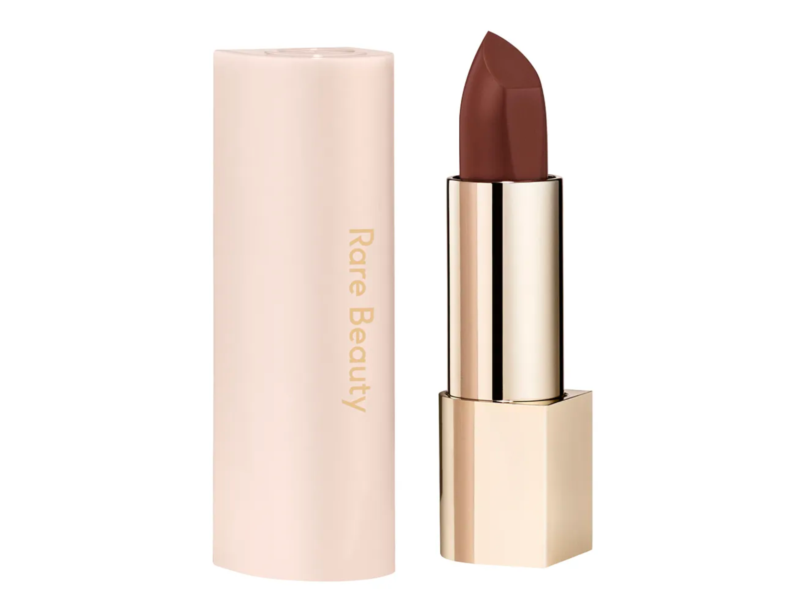

Rare Beauty es una marca de cosméticos que ofrece barras de labios innovadoras que se transforman en aceite ligero, nutriendo los labios con un toque de color y brillo. La fórmula en gel se transforma en un aceite con color para darle a tus labios un toque de color y brillo. También ofrecen una crema labial hidratante y mate que se desliza para conseguir un color intenso y una sensación de ligereza que se mantiene cómoda durante todo el día sin resecarse ni apelmazarse.
caramelo pasion
rosado tierno

chocolate